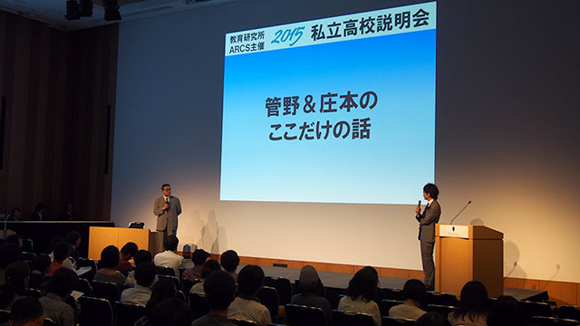

9月26日、教育研究所ARCSが総力をあげた一大イベント、私立高校説明会が開催されました。私立高校説明会は、近隣の有力私立高校の先生方をお呼びして学校の説明をしてもらい、その内容に対して講師が質問をする中で、一般の方には分かりづらい「学校の真の姿」を炙り出していくというものです。今年からARCS主催になり、運営責任者の池村を中心に所長の管野、所員の私、さらに事務職員も総動員で、ほぼ一年間にわたって準備をしてきました。このあたりの苦労話は池村のブログで触れることと思います。
ご来場のお客様にお書きいただいたアンケートを拝見する限り、とても好評いただけているようで、運営一同ほっと胸をなで下ろしております。
さて、今回の私のブログでは取り急ぎ会の感想を書きたいと思います。
今年度の私立高校説明会の特徴は「都内の私立高校ピックアップ」でした。千葉県東葛地域は人口も多く、都内へのアクセスも容易であるにもかかわらず、地域の中で高校までが完結してしまう傾向にあります。東京を除けば比較的多くの私立高校があり、難易度もばらけていることから、「受験する高校の選択肢がないこともないが、迷ってしまうほど多くもない」という、なんともちょうどよい（？）状態です。その結果、生徒の学力レベルに応じていくつかの併願校プランを簡単に作ることができ、いつしかそれが「定番」化しているのです。
東葛地域の教育力向上を目指すARCSでは、この状況をなんとか打破したいと考えてきました。高校選択の段階で数多くの選択肢があれば、そこに競争が生じます。その結果、競争に打ち勝つための努力を各学校がいっそう行うことで、教育内容がどんどん洗練されていきます。実際に都内の私立はこのような競争に日夜さらされていることもあり、生き残るために多様な取り組みを行っているのです。
東葛地域の保護者、生徒により多くの選択肢をご紹介したい。そんな願いを込めて、都内にありながら千葉県北西部からも通える私立高校を独自にピックアップし、参加交渉を行った結果、いくつかの都内高校にご参加いただくことができました。
今回ご参加いただいた学校のプレゼンテーションはどれも面白いものでしたが、やはり都内の高校は目新しさもあって興味を引かれます。授業力向上、独自の理念、一人一人に寄り添う指導。各学校がそれぞれ目標を明確に持ち、その目標を達成するために「システム」を作り手を尽くしているのがよく分かります。会の前に行った学校取材でも、「えっ？ ここまで見せていいの？」とこちらが驚くような情報まで教えていただくこともあり、その「オープン」な感覚にも驚きを感じました。学校のよいところ、うまくいっていないところを包み隠さず見せて、弱点をどんどん克服しようとする貪欲な姿勢が活気の源なのでしょう。
一方で、千葉県、茨城県の私立については、私自身取材担当として「東洋大学附属牛久高等学校」「二松学舎大学附属柏高等学校」「専修大学松戸高等学校」に伺いました。各校それぞれによいところがありますが、三校とも共通しているのが生徒と先生のつながり、そして暖かい雰囲気です。三校ともに進学を重視する進学校ですが、いわゆる「ひんやり」「効率重視」というステレオタイプではなく、ある種県立高校のような大らかさを感じる校風です。しかし、残念ながらこのような良さは「システム」として作られたものではないので、わかりやすくお伝えするのが難しい…。目に付きやすい大学入試実績がクローズアップされがちですが、一方でこのような「無形のよいところ」についても今後様々な機会を捉えてお伝えできればと思います。
このあとARCSでは10月から12月まで「高校受験」をテーマに月一お話会を行っていきます。私立高校説明会よりもより深く、ストレートに高校のコアな情報を随時お伝えしていきますので、今年入試を迎える中3生の保護者の方はもちろんですが、今後のために情報をお知りになりたい他学年のお子さんをお持ちの保護者の方まで、是非是非ご参加ください。お待ちしています！